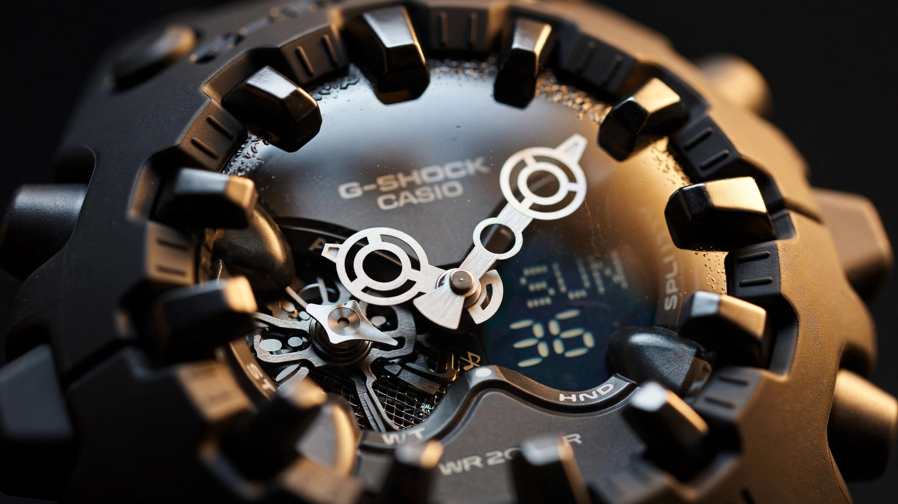

Survive by Letting Go: Inside the GA-V01's Magnetic Shock Release Hand

Watchmakers have been fighting magnetism since Abraham-Louis Breguet noticed his pocket watches running fast near scientific instruments in the early 1800s. Two centuries of countermeasures followed. Soft iron inner cases that act as Faraday cages. Antimagnetic alloys like Glucydur and Nivarox for balance wheels and hairsprings. Omega's Master Chronometer certification, which demands accuracy after exposure to 15,000 gauss. Silicon escapements that sidestep the problem entirely because silicon is not ferromagnetic. Rolex's Milgauss, named for its rated resistance to 1,000 gauss. An entire branch of horological engineering exists for one purpose: keeping magnetic fields away from timekeeping components.
Casio looked at all of that and did the opposite, deliberately placing a magnet at the center of a watch dial and using magnetic force not as a threat to be neutralized but as the primary structural coupling between the minute hand and the movement shaft.
In the GA-V01, released in early 2025, the minute hand is not pinned to the center shaft through a conventional press fit or friction mount. It is held in place by a magnet, intentionally and by design, making this the first time in G-Shock's 43-year history that the brand has used magnetic force as a structural element rather than treating it as a contaminant to be excluded. Casio calls the system the Shock Release Hand, and while the name sounds like marketing filler, the engineering behind it represents a genuine rethinking of how analog hands survive mechanical shock.
Why Hands Break
In a conventional analog watch, the minute hand is press-fitted or friction-fitted onto a cannon pinion, a thin tube that sits concentrically over the center wheel's arbor, transferring torque from the gear train through the pinion to the hand and rotating it at one revolution per hour. Under normal conditions, this rigid coupling works perfectly, delivering sixty rotations per day, year after year, with negligible wear on the press fit.
Drop the watch and the physics change completely. A 1.5-meter fall onto concrete subjects the case to roughly 3,000 to 5,000 g of deceleration, depending on the landing angle and surface hardness, and G-Shock's internal specification demands survival at 10 meters onto hard surfaces, which pushes peak loads well into the tens of thousands of g range. At those accelerations, a minute hand becomes a projectile restrained by friction alone.
Consider the forces involved, because the numbers are startling. A steel minute hand in a typical ana-digi G-Shock weighs around 50 milligrams. At 5,000 g, that hand experiences an inertial force equivalent to 250 grams pulling it laterally off the pinion. That load is concentrated at the press-fit interface, a contact area measured in fractions of a square millimeter. Stress at the joint spikes. If the hand is small and light, friction holds. If the hand is large and heavy, which is exactly what designers want for a bold analog display, the inertial moment exceeds the press-fit's holding force, and the hand either bends, displaces on the shaft, or snaps the pinion outright.
G-Shock has historically managed this problem by keeping analog hands small and lightweight, visible in the GA-2100, the GA-110, and the GA-700, whose hour and minute hands are narrow, flat stampings with minimal mass that stay within the holding capacity of a standard press fit even at extreme shock loads. Acceptable from a durability standpoint, but it places a hard ceiling on what designers can accomplish with the dial, because oversized hands, sculptural hands, hands with visual weight and dimensional presence all run into the same constraint: the heavier you make the hand, the more likely it is to exceed the press-fit's holding force under impact and bend, displace on the shaft, or snap the pinion outright.
Casio's solution was elegant in its simplicity: stop holding on so tightly, and let the hand move.
Compliant Coupling: The Physics of Release
A rigid connection and a magnetic connection respond to shock in fundamentally different ways, and the distinction maps precisely to a concept that mechanical engineers call compliant versus rigid coupling, a framework that shows up everywhere from automotive crumple zones to earthquake-resistant building foundations.
In a rigid system, the hand and the shaft are one unit. Zero play. When the shaft decelerates, the hand must decelerate at the same rate, at the same instant, with all of the inertial force passing through the joint in a microsecond spike that determines whether the connection survives. Peak stress is enormous. Duration is vanishingly short. Failure is binary: either the joint holds, or it does not, and there is no graceful middle ground.
In a magnetically compliant system, the hand is free to move independently of the shaft within the limits of the magnetic restoring force, which means that when the shaft decelerates violently during impact, the hand does not have to follow at the same rate or at the same instant. Instead, it can lag behind, overshoot, or rotate off-axis momentarily while the magnetic field provides a restoring torque that gently pulls it back toward the correct angular position over a period of seconds to minutes. Peak stress at the interface drops dramatically because the hand's deceleration is spread over a longer time period rather than concentrated in the microsecond spike of a rigid collision, and you can think of the difference as the difference between a car hitting a concrete wall and a car hitting a sand-filled barrier: same kinetic energy absorbed, very different peak forces experienced by the occupants.
Crucially, the magnetic coupling is self-correcting in a way that no rigid connection can be. A press-fitted hand that slips under shock stays wherever it ends up, permanently misaligned and permanently inaccurate, leaving the owner to either live with a minute hand that reads three minutes off or send the watch in for service. A magnetically coupled hand that slips under shock drifts back to the correct angular position as the magnetic restoring torque overcomes friction and residual inertia, requiring no intervention and no repair. Casio states this self-correction takes "a few minutes," language that is deliberately vague, probably because the return time depends on how far the hand displaced, whether the watch is stationary or moving, and the precise orientation of the wrist during recovery.
Self-correcting resilience with no maintenance required and no permanent deformation: you absorb the hit, wobble briefly, and recover to accurate time display without ever opening the caseback.
Two Hundred Years of the Wrong Answer
Calling traditional antimagnetic engineering "wrong" is obviously unfair. Mechanical watches contain ferromagnetic steel components whose behavior changes in the presence of external magnetic fields. A magnetized hairspring coils stick together, reducing effective length, increasing oscillation frequency, and causing the watch to run fast. Abraham-Louis Breguet encountered this problem in the 1790s. Charles-Édouard Guillaume's development of Invar and Elinvar alloys in the late 19th century partially addressed it. IWC's Ingenieur, introduced in 1955, pioneered the soft iron inner case as a Faraday cage around the movement. Rolex's Milgauss debuted the same year with a similar approach. Omega's >15,000 gauss Master Chronometer program, launched in 2015 with non-ferromagnetic alloys and silicon balance springs, represents the current state of the art.
All of these solutions share a common assumption: magnetism must be excluded from the movement, either through physical shields that keep external fields out or through material substitutions that eliminate the components those fields would affect, and both approaches add cost, complexity, and physical bulk to the watch.
But the GA-V01 is not a mechanical watch; it is quartz, and its timekeeping is governed by a piezoelectric crystal oscillating at 32,768 Hz, a frequency determined by the crystal's physical dimensions and entirely unaffected by external magnetic fields at any intensity a wristwatch would encounter in normal use. There is no hairspring to magnetize, no balance wheel to perturb, no ferromagnetic regulation system to protect, which means quartz watches have always been inherently immune to the magnetic sensitivity that defines mechanical watchmaking's most persistent engineering challenge.
Which means Casio had a degree of freedom that Swiss mechanical watchmakers never did, and without a magnetic vulnerability to protect, the engineers at Hamura R&D were free to introduce magnetic force anywhere in the watch's structure without consequences for timekeeping accuracy. Mechanical watchmakers cannot do this because placing a magnet anywhere near a conventional mechanical movement would compromise rate stability. Casio placed one at the center of the dial, directly above the movement, because the movement does not care.
It is a genuinely elegant inversion. A cheap technology that the mechanical watch industry has spent fifty years dismissing as inferior gave Casio the freedom to solve a problem that expensive movements cannot.
Integrated Armor: Bezel as Exoskeleton
Magnetic hand coupling is the headline innovation, but the GA-V01's shock protection runs deeper. Casio developed an entirely new case architecture for this model that reaches back to both the original 1983 DW-5000C philosophy and the organic prototypes that Kikuo Ibe built before commercial pressures reshaped his vision.
Kikuo Ibe's original vision for G-Shock was a watch encased in rubber, insulated from impact like a ball bouncing on concrete, and the first commercial model, the DW-5000C, released in 1983, deviated significantly from that spherical concept under the pressure of manufacturing constraints and wrist-wearability requirements. Effective as a product, but visually conventional. Forty-two years later, the GA-V01 finally realizes Ibe's ball concept in a production watch, with a continuous, rounded profile that has no flat surfaces or sharp transitions, and where the bezel and band flow into each other as a single integrated construction that eliminates the joint between case and strap, traditionally a structural weak point under lateral shock loading.
Dimensional indexes, the protruding markers at the dial perimeter, serve a dual purpose. They overlap the spherical crystal, extending above the glass surface so that in a fall, these indexes act as bumper guards, absorbing impact before the crystal contacts the striking surface. On a standard G-Shock, the bezel lip performs this function alone. On the GA-V01, the indexes themselves are the first line of defense, distributing contact force across their resin mass before it can reach the glass.
Side buttons use a convex, protruding design that positions them proud of the case surface, and this is armor disguised as styling, because recessed buttons on conventional watches can be driven inward by lateral impacts, transmitting force directly to the module, while protruding buttons with compliant mounting absorb that force externally before it reaches the movement.
Spherical crystal ties it together. Curved glass is inherently stronger than flat glass under point loads because the curvature distributes contact stress across a larger area, the same structural principle that makes eggshells surprisingly robust despite their thinness, and the same reason domed cathedral windows survived centuries while flat ones cracked. Combined with the bumper indexes and the integrated case-band construction, the GA-V01's exterior works as a unified exoskeleton where every design element contributes to shock management. Nothing decorative. Nothing wasted.
What You Give Up
Every compliant system has trade-offs, and the Shock Release Hand is no exception. Casio acknowledges two in the product documentation.
First, the minute hand may shake or vibrate during normal wear, because magnetic coupling means the hand lacks the dead-still rigidity of a conventional press fit, and quick wrist movements, bumping the watch against a door frame, even vigorous hand-washing can cause the minute hand to jitter visibly. For someone accustomed to the planted, immovable hands of a conventional watch, this movement will look like a defect. It is not. It is the compliant system doing exactly what it was designed to do: decoupling the hand from transmitted vibration so it can survive forces that would destroy a rigid connection.
Second, after a hard impact, the minute hand may read incorrectly for several minutes while the magnetic restoring force returns it to the correct position, and during that interval, the digital display, which has no mechanical coupling to disrupt, continues showing accurate time. Anyone who needs precise minute-level accuracy immediately after slamming their watch into a rock can glance at the LCD, but the analog display is unreliable during recovery, which amounts to an honesty that most watchmakers would never put in writing.
A subtler trade-off involves magnetic interference with nearby objects, because placing a magnet inside a wristwatch means the watch itself generates a small external magnetic field whose strength Casio does not publish but which is necessarily weak enough to avoid interfering with the quartz module while strong enough to hold the hand in position against gravity and moderate wrist motion. In practice, this field is unlikely to affect credit cards, phones, or other wrist-worn devices at normal distances. But it does mean the GA-V01 should not be worn directly against a mechanical watch, and the irony would be too perfect: a quartz watch designed to embrace magnetism, demagnetizing the steel hairspring of the mechanical piece next to it on a collector's wrist.
Size is the final concession. At 49.1 mm wide, 58.2 mm lug-to-lug, and 19.6 mm thick, this is an enormous watch by any standard, and although seventy-six grams keeps it surprisingly light for its dimensions thanks to the all-resin construction, the GA-V01 is not a watch that disappears under a shirt cuff or sits politely on a small wrist. It is a statement piece, intentionally oversized to echo Ibe's spherical prototype from 1983, and the integrated bumper construction adds case volume that a conventional flat-sided design would not require.
Why It Matters at $140
A magnetic compliant coupling in a million-dollar concept watch would be interesting but irrelevant. Most of watchmaking's cleverest innovations live behind five- and six-figure price tags, visible only to collectors who can afford admission. Constant-force mechanisms. Remontoir d'égalité escapements. Compliant chronograph architectures like the one in the Monaco Evergraph. Brilliant engineering, all of it. Purchased by hundreds of people worldwide.
Casio put a genuinely novel shock protection system into a resin watch that retails for around $140, not as a limited edition or a concept piece but as a full-production model available at mall kiosks and Amazon. Module 5764, mass-produced at Casio's Thai and Chinese facilities, runs on a single battery for ten years and delivers two hundred meters of water resistance, world time across 48 cities, five alarms, and a 1/100th-second chronograph alongside a minute hand that works in a way no other watch hand on the market does.
This is how Casio has always operated, developing engineering innovations for the mass market first and then migrating them upward into premium lines rather than the other way around. Tough Solar was not invented for MR-G collectors paying $4,000 for titanium and COBARION. Carbon Core Guard debuted on the $100 GA-2100 before appearing on premium models. G-Shock's history is a story of democratic engineering, and the Shock Release Hand will follow the same trajectory. Within two product generations, expect to see magnetic hand coupling across Casio's analog-digital lineup, and possibly in the metal-cased MT-G and MR-G ranges where larger, heavier hands have always pushed the limits of rigid pinion mounting.
For the mechanical watch industry, the lesson is more uncomfortable. A $140 quartz watch just solved a problem that $50,000 mechanical chronographs have struggled with for decades: how to mount a large, visually imposing hand that survives extreme shock without bending, breaking, or displacing permanently. Casio solved it by abandoning the assumption that a hand must be rigidly attached to its shaft. Sometimes, the strongest connection is one that knows when to let go.
Sources
- Casio Computer Co., Ltd., "GA-V01 Series Product Features," gshock.casio.com, 2025.
- Hodinkee, "Introducing: G-Shock Throws It Back To The Original 'Rubber Ball' Prototype With The New GA-V01," hodinkee.com, May 2025.
- Casio Computer Co., Ltd., "G-Shock GA-V01 Concept and Features," Casio Middle East & Africa product page, casio.com.
- Casio Computer Co., Ltd., "G-Shock History: The Story of Absolute Toughness," gshock.casio.com.
- Omega SA, "Master Chronometer Certification: 15,000 Gauss Resistance," omegawatches.com.
- International Watch Company (IWC), "Ingenieur: The Engineer's Watch Since 1955," iwc.com.
- Notebookcheck, "First look at four new G-Shock Camo and Gold watches," notebookcheck.net, May 2026.